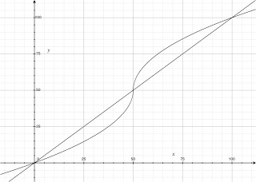

前陣子一位學妹在噗浪上這樣發問：「問!! 假設我要讓數字越大的越大 越小的越小 我該怎麼做?? 假設零到一百 處理完區間還是零到一百 但是大於五十的會變大 小於五十的會變小 應該要做什麼@@???開根號??微積分?? 」
OK….我來整理一下我對這個問題的理解：
求一函數，定義域為 [0,100]，值域亦為 [0,100]，且若 0<x<50 則 f(x)<x，若 50<x<100 則 f(x)>x。
另外還有一部分是我猜測應該也是需求的：
若 x<y 則 f(x)<f(y)，f(0)=0，f(50)=50，f(100)=100。
後面這幾項其實是為了讓這個調整更加完備一點…
由於這個調整的曲線很像是相片後製時常用的S型曲線(我不是很清楚專有名詞，好像是 gamma 曲線的調整云云)，說不定未來哪天會用到，所以特別寫篇文章記錄這件事 :P
這是我提出的 function：
設 t=x-50，f(x)=50+sqrt(50)sqrt(abs(t))(abs(t)/t)
如果把 t 代進去(寫起來會比較複雜)就是這樣：
f(x)=50+sqrt(50)sqrt(abs(x-50))(abs(x-50)/(x-50))
底下有圖有真相。當時作圖沒有特別注意的部分是，x<0 跟 x>100 的部份應該要限制住的，不過只是做個概念的印證而已，就不太在意了~

至於概念上…..我不是很會解釋，基本上就是利用 sqrt(t) 這個曲線的特性，再去做參數上的調整就是了。我想利用 log 那類的函數應該也可以，但就沒有仔細想了。雖然數學上應該已經有滿多現有的作法可以完成這個目的，不過自己拼湊也是種樂趣 :D
總結一下，我設計的這個 function 可以對一群資料做調整，使其高的更高、低的更低，並且保持其大小關係(如果是調整分數之類的應用，這點很重要)。同時這個 function 也是嚴格遞增，用於調整分數之類的滿適合的。:)
Last modified on 2012-01-22